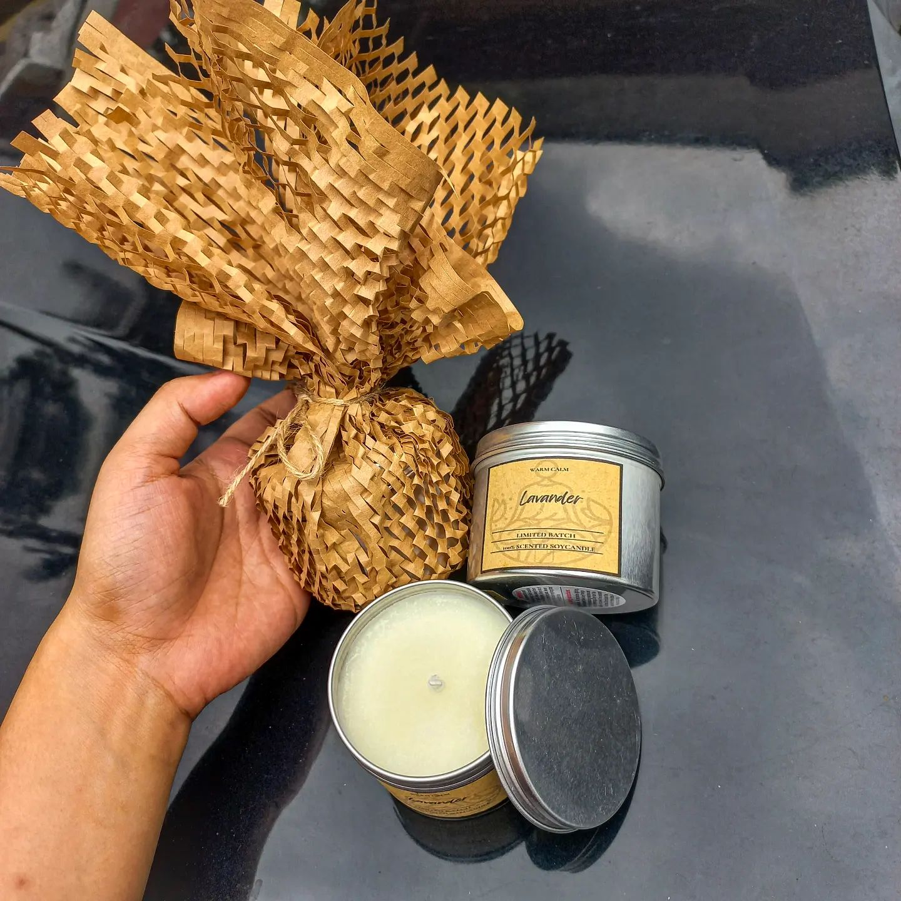

Scented Candle

Why will people come to my site?
People will come to my site to check the available products, the design of it and if it is worth the price.
In these days, its hard to have a work because there is a lot competition in this field and having the website for business, make me think that I have good potential to grow because I made an effort for it.
I am a mother of two kids, a 3 year old and a 1 year old. Its been five years since I become a housewife and It is a bit frustrating for me sometimes because I feel like I do things repeatedly. So I enrolled in BYU to fulfill my patriarchal blessing that says that I need to finish the degree that I want. And also, I am here today because I want to be the best version of myself. I want to be a good example to my kids having a good education so in the future It will be easy for me to say that finishing your degree is a best thing.
I was raised by a parents who don't value a higher education because they got it from their parents that I feel that It was passed by me and my siblings. At first I was happy because they didn't pressure me finishing my degree because I really feel exhausted that time because we have a family problem. But when I see my batchmates gaining a degree, I feel lost, depressed and jealous somehow. But I ignored that and I look forward to serve a mission so I feel distracted.
I finished my mission requirements and passed it to my Bishop but someone asked me to marry in the Temple. And who I am to reject a good proposal? I accepted his offer to marry in Gods Temple and I am here today, fulltime housewife a mother and student.
Being a student, wife and a mom is a bit challenging for me but It is really fulfilling. These experience made me realize that I can be more If you will try. At first I was hesitant to enroll because I am afraid that I cannot do it in a right way but having me here right now is an achievement for me.
"You are noble and great ones" that is the word in that bible that I have here in my heart that help me to give out the best in me. "By small and simple things are great things brought to pass" is also one of my favorite scripture verses that later on, I learned that we can also apply this in ourselves or being a good version of yourself. I read a book that says that you can be anything you want if you keep on doing it repeatedly. Before, I am judging myself that I cannot do some things because I am not used to it or maybe I don't like it. But having all these mindset made me realize that I can be anything that I want. Even the animal can learn if they keep doing things 1000x so how much more If us that we have a mind that we can control. I am grateful that I know all of this. I am grateful that the teachings of the church is not just for spiritual but also for everything that we do.
I believe that I will be a best website developer and this site will help me to show my product to my future buyers and I will continue my business in the future and use the website that I did.